西山森林公园&香山公园 游记
是在 4.4 出去玩的，然后我在 6 天后努力回忆当时玩了什么试图写成一篇游记，可谓很有魔怔劲。
好吧事实是当天晚上我乘记忆尚且清晰立刻写了个朋友圈文案，写的时候我大概知道这个估计不能写得太详细，结果试图多记录一些有趣的点还是随便写到了 1500 字，远远超出了常规朋友圈的配文长度，毕竟正常人也不会一年发一次然后花 1h 写文案。
但发完还是感觉有些草率，主要是朋友圈只能塞 9 张图但我觉得趣味的图还有很多，想着这个可以作为 preview，然后改改完善一下把 final version 发到博客上去。一开始还是计划尽快改的，但要干的正事有点多，接下来几天每天干完正事都很累，就拖到现在了。
无论如何，还是进入正文吧。
我照例还是个不喜欢出门的人，也不是个擅长组织活动的人，但初中同学指出：清明应该出去玩一下，我想想那也行。然后他早上过来告诉了我好消息：到原定的居庸关长城，竟然只需要 2h 就可以抵达。但一天花 4h 通勤还是太神经了，直觉当然是：感觉不如不去……但他远道而来我又不好意思这么说。记忆里突然浮现出 “香山的树” 四个字，好像北京是有个香山公园，看了下好像只要 40min 就能到，感觉挺对的，换成这个吧。
……于是我们就到了西山公园。原因是临出发前发现到西山森林公园（下面就写西山公园好了）还要快 10min，然后不知怎的就执行成西山公园了。进门就看到了很有特色的人工瀑布，也可能是很有人工特色的瀑布，再走走是条小溪，两边栽着花风景倒是还可以。清明节踏青有很多小朋友啊，还看到很多小朋友在玩一个滑梯，虽然是大朋友了但我也玩了一下！好消息是大朋友也还不至于被卡在滑梯里面。

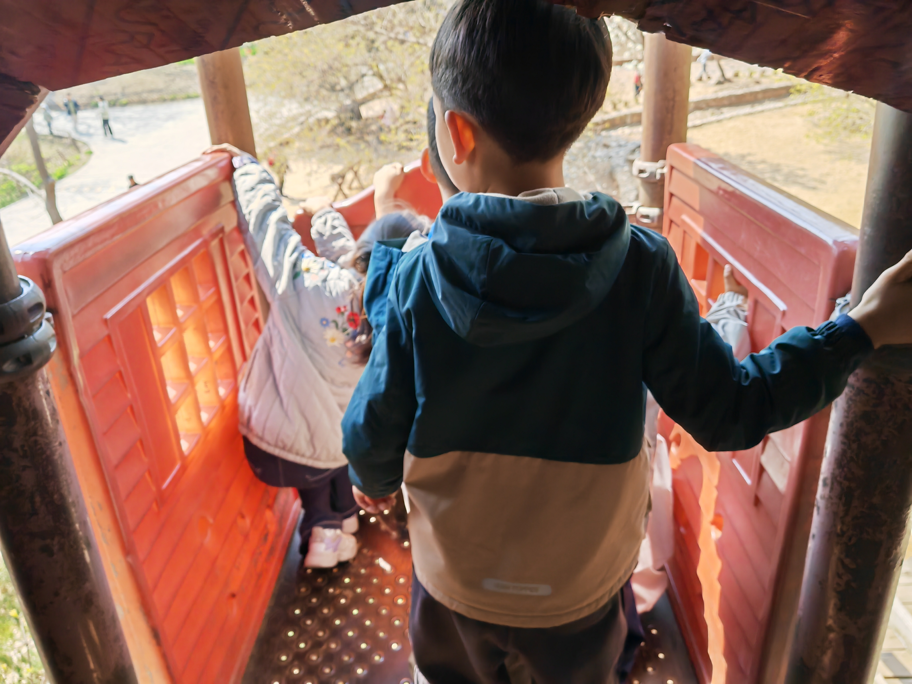
在往上爬了点，就能立刻理解到西山公园和香山公园的区别：西山公园开发程度更低。因此路边直接能看到森林防火的水桶，也许有些煞风景（吗？），其实我觉得也挺有趣。不过西山公园风景于是不错的，比如这些花。

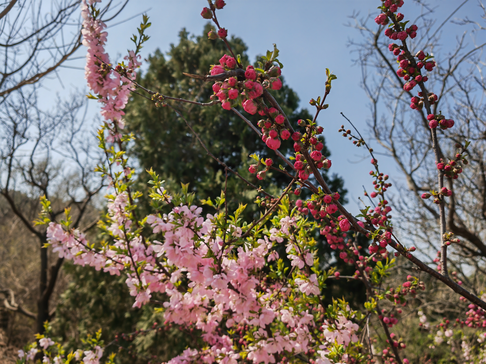
现在好像很多景区都有挂祈福牌的地方啊，除了能猜到的爱情事业顺利外，还看到了父母给孩子的祝福以及学生对导师的祝福，这个不太容易想到。最有趣的是这个英语写的愿加沙和伊朗战事终止的牌子（那俄乌咋办？）。
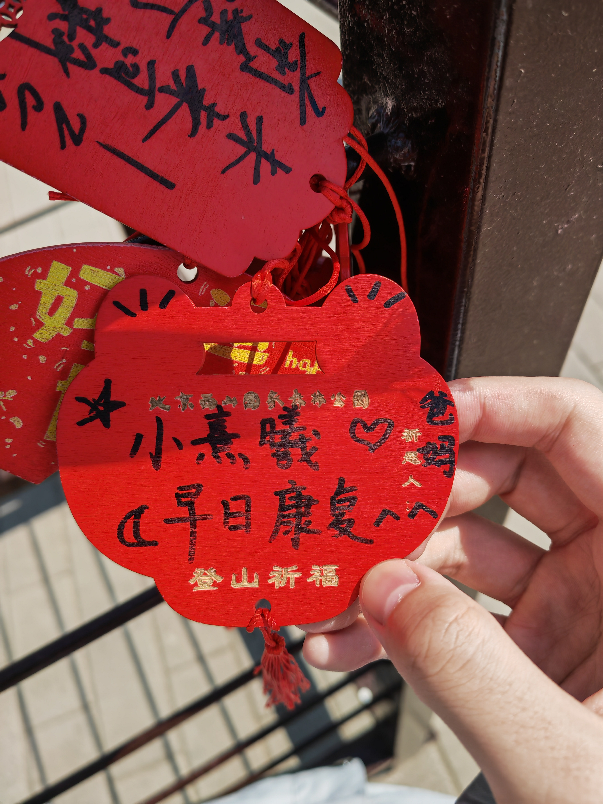
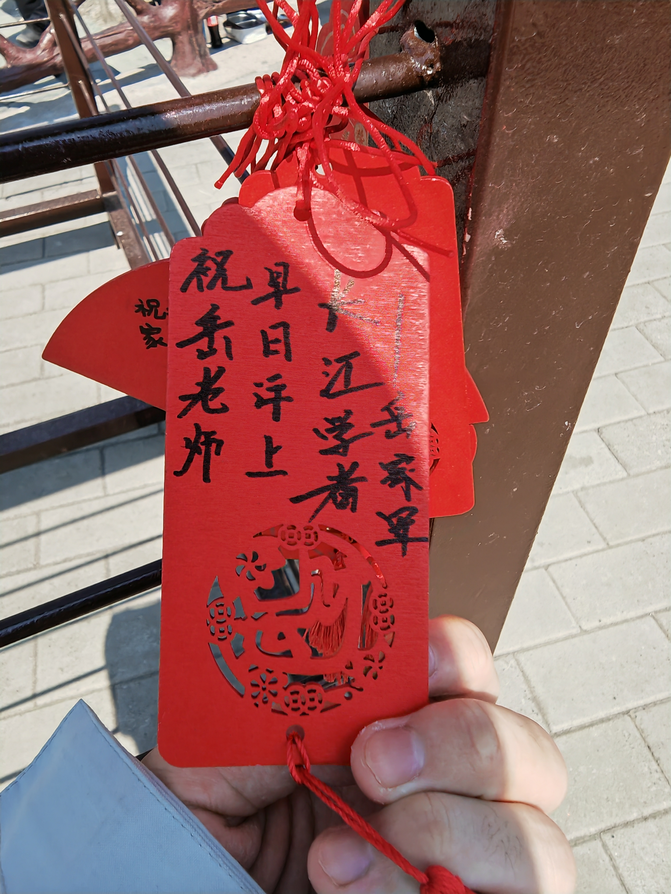
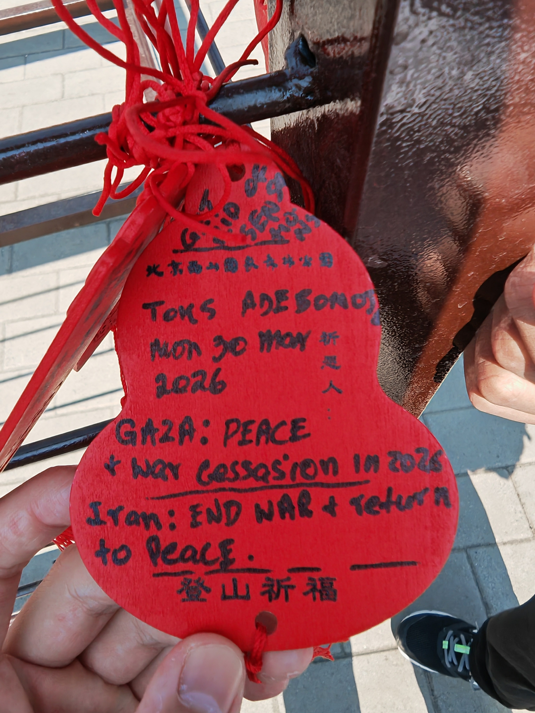
又随机游走了一会就走到下山路了，走到山脚时看到了野猪出没的牌子和一个一片石的标牌。可惜查了一下李自成的一片石之战的地点离北京很远，所以这只是个重复的地名。


此时距离 10:00 到上山过去了 2h45min，其实现在也不失为回学校赶 ddl 的好时机！但初中同学还是很有激情表示下午也要继续玩，但都已经下山了接下来怎么办呢？此时想到说，虽然西山公园逛完了，但香山公园还没逛啊！看了眼已经走了 1w 步了，我有点担忧下午再玩我的腿还会好吗，但想想那也行。就近找了家西餐厅吃中饭，价格竟然意外地合理。

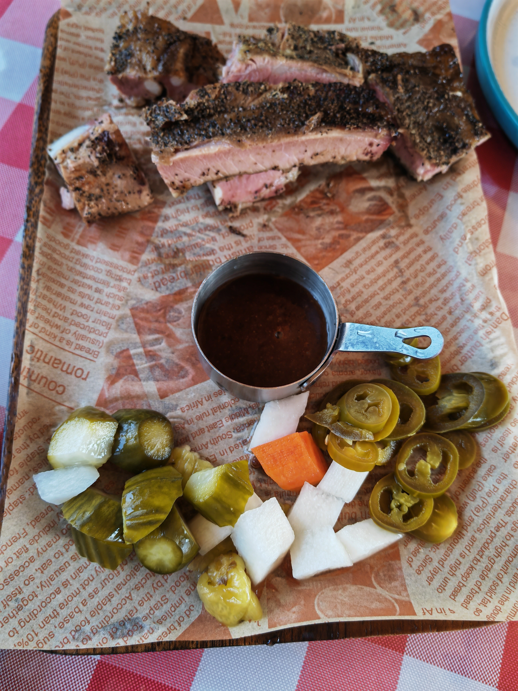
吃完饭发现了有趣的事实：步行导航去香山公园要 1h，但打车去香山公园也要 1h，因为打车要绕一大圈，而步行可以走山路。那就走山路！路上途径了南马场水库，是个小水库，但途径欣赏一下风景也不错。


接下来导航指引我们走一条，官方的土路。之所以说是官方的是因为这段土路开始时有明确的指示牌指向一侧是水库一侧可以到达香山公园，但这确实是条土路，路况略显艰难。


更大的困难在于我们在沿着山脊攀爬，因此风尤为剧烈。在此前的旅途中我就多次抱怨过为什么北方总是狂风大作，在山脊上更是吹得难以听见同伴的声音。

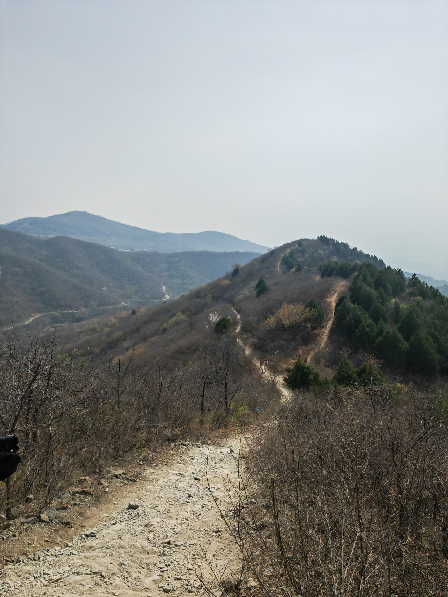
然后终于是到达了香山公园！的一个很偏的门，保安甚至没仔细检我们的票就放我们进去了，也许也有门票只要 15 块也没多少钱的原因。此时已经是 15:00 了，自吃完饭出发又过了 80min，我们在 9:00 决定去香山公园后终于在 15:00 抵达了，可喜可贺，可喜可贺。（事后看看，再迟 1h 到就要进不去了）
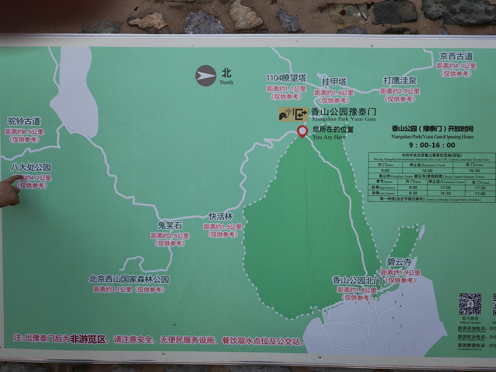

一进门就发现人立刻多了很多，一下子就热闹起来了，而且各种基础设施看上去也确实比西山公园完善。但问题是走了 4h 后我已经走不太动了……所以计划再逛逛就下山。又拍摄了一些花和许愿牌，


稍微走了走就走到了最高点，感觉左边这张有一些云深不知处的感觉？。还拍了张文创店内景图，这也是香山公园与西山公园的区别之一：西山公园根本没有这种感觉的文创店。

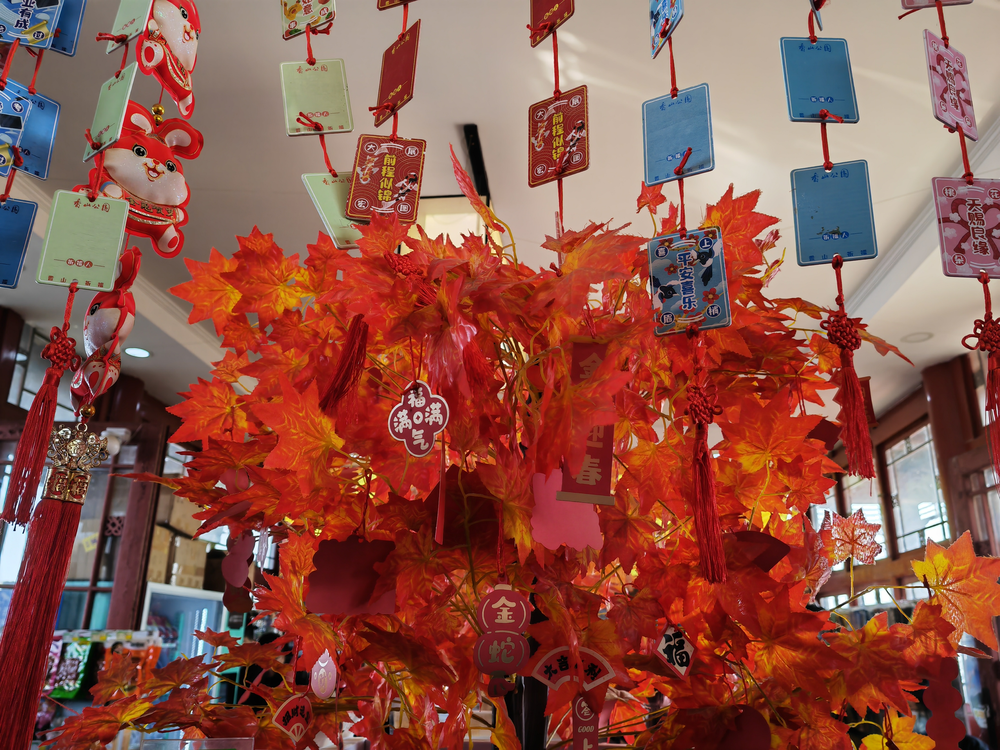
15:30 就开始下山了，不过我们一开始就基本上到达了香山公园最高点，感觉到达后 30min 开始下山也是对的。山腰的风景是这样的：

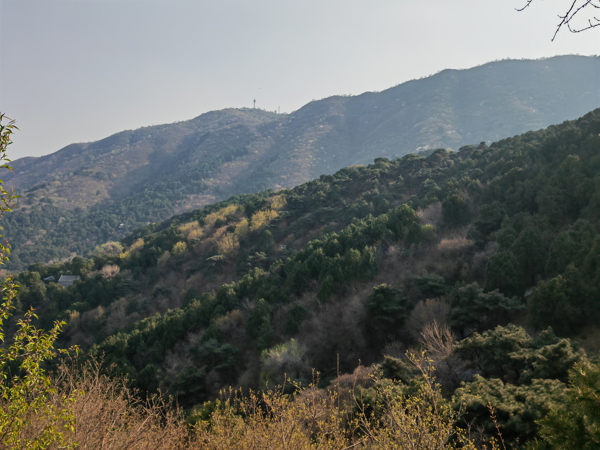
下山时还看到了神秘自取黄瓜和饮用水（该怎么解释，总之就是无人商店全凭自觉），能摆出这种东西，颇有种大同社会路不拾遗的感觉。还看到了缆车轨道，原来香山也是可以坐缆车上去的（感觉不知道这事，属于是从豫泰门进导致的）
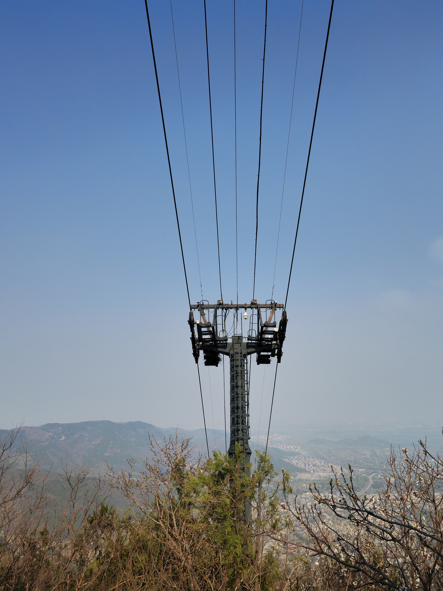

接近山脚处看到了一座塔，我说这个配色和颐和园的建筑比较类似，但同学认为我说得完全不对，不懂啊！还看到了城楼状物，但最后只是远观了一下。


香山公园山脚边有一些看上去比较破败的建筑和干涸的河床，也挺有趣的。


更多的花，以及疑似松果。
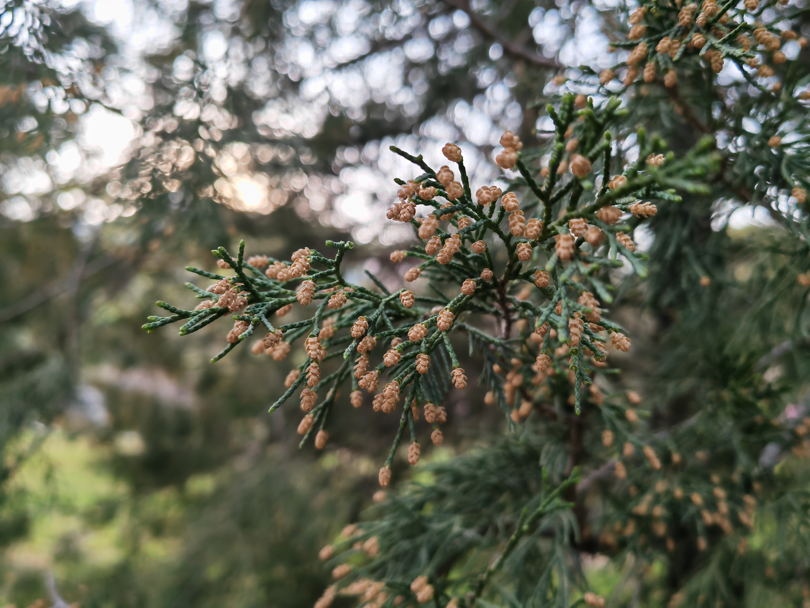

还有一个庭院，里面有假山池塘之类的，以及人造喷泉。但正如前文所说今天刮了一天狂风，所以即使离很远，喷泉也可以让你体验下雨的感受。庭院只拍了一张，因为拍完我手机就彻底没电了。又走了一会从包里竟然找出一个充电宝，我都不知道是什么时候放进去的，插上竟然还有电，但也许电压太低了根本充不上电，一直维持在 3%。


即将出公园时发现这个所谓枫林餐厅前风景很不错，还看到了行程中仅有的红色的树（指枫树，当然文创店里的假树不算）。问题在于虽然香山以红叶闻名，但来的季节根本不对，所以这趟也当然没法见识这最有名的风景。顺便拍了仅有的一张人像，因为是随便拍的，现在仔细看看当然全是瑕疵，眼睛没睁开表情也很神秘。但无所谓了，反正这张照片的作用大概是证明写这篇游记的确实是个人而不是幽灵。


出公园时充电宝也没电了，而且手机电量显示仍然是 3%，非常幽默。最终还是路边小店又扫了个充电宝。回程是地铁西郊线，这是个地面站，而且竟然进场要排队！不过队看着长，车的吞吐量很大，其实也很快就排到了。18:00 终于坐上了地铁，结果根本没抢到位置，但腿根本撑不住，直接席地而坐了。坐着视线只能看到其他人的腿，让我有些回忆起童年时期乘（尤其是非常挤）的公交车时的感受。
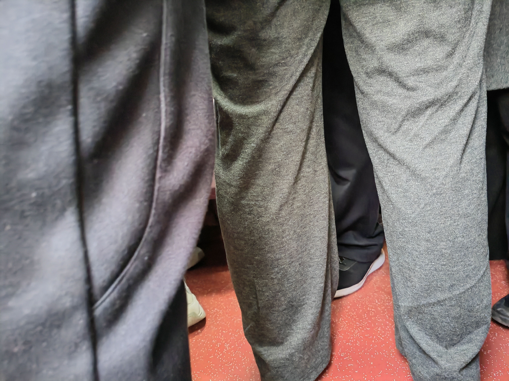
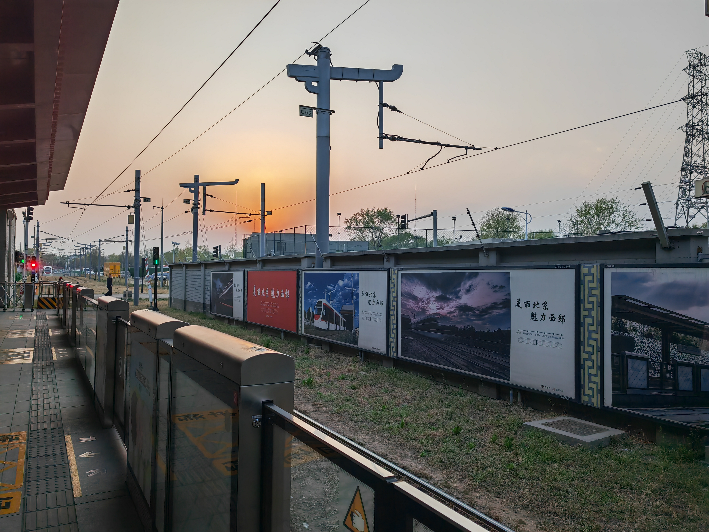
晚饭吃了家学校附近的店，比较常规就不必多说了！到寝室一看，竟然走了 3.7w 步，不过想想今天差不多从 10:00 高强度逛到 18:00，中间只吃饭休息了 1h，走了 7h 好像这个数字也合理。
也许应该稍微总结一下，感觉这次出游还是很趣味的！走到哪里算哪里的感觉很有趣，而且感觉走过的场景的 diversity 非常高，包含了 水库、山脊的土路、开发得非常完善的公园、比较欠开发的公园，可以说出游效率很高！
感觉遗憾是没找个什么软件记录行走的路线图，以及西山公园其实拍的照片还是相对少了点，再说吧。